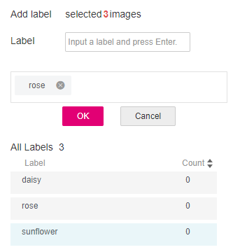
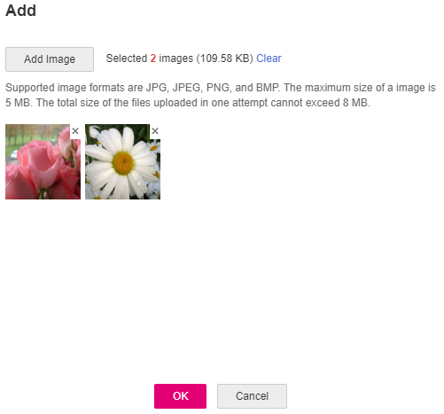

Model training uses a large number of labeled images. Therefore, before the model training, add labels to the images that are not labeled. You can add labels to images by manual labeling or auto labeling. In addition, you can modify the labels of images, or remove their labels and label the images again.
Before labeling an image in image classification scenarios, you need to understand the following:
- You can add multiple labels to an image.
- A label name can contain a maximum of 32 characters, including Chinese characters, letters, digits, hyphens (-), and underscores (_).
Starting Labeling
- Log in to the ModelArts management console. In the left navigation pane, choose Data Management > Datasets. The Datasets page is displayed.
- In the dataset list, select the dataset to be labeled based on the labeling type, and click the dataset name to go to the Dashboard tab page of the dataset.
By default, the Dashboard tab page of the current dataset version is displayed. If you need to label the dataset of another version, click the Versions tab and then click Set to Current Version in the right pane. For details, see Managing Dataset Versions.
- On the Dashboard page of the dataset, click Label in the upper right corner. The dataset details page is displayed. By default, all data of the dataset is displayed on the dataset details page.
Synchronizing Data Sources
ModelArts automatically synchronizes data and labeling information from Input Dataset Path to the dataset details page.
- For an image classification dataset, the .txt file with the same name in the same directory as the data source is used as the label of the target image.
- For an object detection dataset or image segmentation dataset, the .xml file with the same name in the same directory is used as the label of the target image.
To quickly obtain the latest data in the OBS bucket, on the All or Unlabeled tab page of the dataset details page, click Synchronize Data Source to add data from OBS to the dataset.
Filtering Data
On the Dashboard page of the dataset, click Label in the upper right corner. The dataset details page is displayed, showing all data in the dataset by default. On the All, Unlabeled, or Labeled tab page, you can add filter criteria in the filter criteria area to quickly filter the data you want to view.
The following filter criteria are supported. You can set one or more filter criteria.
- Label: Select All or one or more labels you specified.
- Sample Creation Time: Select Within 1 month, Within 1 day, or Custom to customize a time range.
- File Name or Path: Filter files by file name or file storage path.
- Labeled By: Select the name of the user who performs the labeling operation.
Labeling Images (Manually)
The dataset details page displays images on the All, Labeled, and Unlabeled tabs. Images on the All tab page are displayed by default. Click an image to preview it. For the images that have been labeled, the label information is displayed at the bottom of the preview page.
- On the Unlabeled tab page, select the images to be labeled.
- Manual selection: In the image list, click the selection box in the upper left corner of an image to enter the selection mode, indicating that the image is selected. You can select multiple images of the same type and add labels to them together.
- Batch selection: If all the images on the current page of the image list belong to the same type, you can click Select Images on Current Page in the upper right corner to select all the images on the current page.
- Add labels to the selected images.
- In the label adding area on the right, set the label in the Label text box.
Click the Label text box and select an existing label from the drop-down list. If the existing labels cannot meet the requirements, you can go to the page for modifying the dataset and add labels.
- Confirm the Labels of Selected Image information and click OK. The selected image is automatically moved to the Labeled tab page. On the Unlabeled and All tab pages, the labeling information is updated along with the labeling process, including the added label names and the number of images for each label.
Figure 1 Adding labels
 - In the label adding area on the right, set the label in the Label text box.
Viewing Labeled Images
On the dataset details page, click the Labeled tab to view the list of the labeled images. By default, the corresponding labels are displayed under the image thumbnails. You can also select an image and view the label information of the image in the File Labels area on the right.
Modifying Labeling Information
- Modifying based on images
On the dataset details page, click the Labeled tab, and select one or more images to be modified from the image list. Modify the image information in the label information area on the right.
Modifying a label: In the File Labels area, click the edit icon in the Operation column, enter the correct label name in the text box, and click the check mark to complete the modification.
Deleting a label: In the File Labels area, click the delete icon in the Operation column to delete the label. This operation deletes only the labels added to the selected image.Figure 2 Modifying a label
- Modifying based on labels
On the dataset details page, click the Labeled tab. The information about all labels is displayed on the right.
- Modifying a label: Click the editing icon in the Operation column. In the dialog box that is displayed, enter the new label name and click OK. After the modification, the images that have been added with the label use the new label name.
- Deleting a label: Click the deletion icon in the Operation column. In the displayed dialog box, select Delete label, Delete label and images with only the label (Do not delete source files), or Delete label and images with only the label (Delete source files), and click OK.
Figure 3 Information about all labels
Adding Images
In addition to automatically synchronizing data from Input Dataset Path, you can directly add images on ModelArts for data labeling.
- On the dataset details page, click the All or Unlabeled tab. Then click Add.
- On the Add page that is displayed, click Add Image.
Select one or more images to be uploaded in the local environment. Images in JPG, JPEG, PNG, and BMP formats are supported. The size of a single image cannot exceed 5 MB, and the total size of all images uploaded at a time cannot exceed 8 MB.
After the images are selected, their thumbnails and sizes are displayed on the Add page.
Figure 4 Adding images
 - On the Add page, click OK.
The images you have added will be automatically displayed in the image list on the Unlabeled tab page. In addition, the images are automatically saved to the OBS directory specified by Input Dataset Path.
Deleting Images
You can quickly delete the images you want to discard.
On the All, Unlabeled, or Labeled tab page, select the images to be deleted or click Select Images on Current Page to select all images on the page, and click Delete in the upper left corner to delete the images. In the displayed dialog box, select or deselect Delete source files as required. After confirmation, click OK to delete the images.
If a tick is displayed in the upper left corner of an image, the image is selected. If no image is selected on the page, the Delete button is unavailable.

If you select Delete source files, images stored in the corresponding OBS directory will be deleted when you delete the selected images. Deleting source files may affect other dataset versions or datasets using those files. As a result, the page display, training, or inference is abnormal. Deleted data cannot be recovered. Exercise caution when performing this operation.